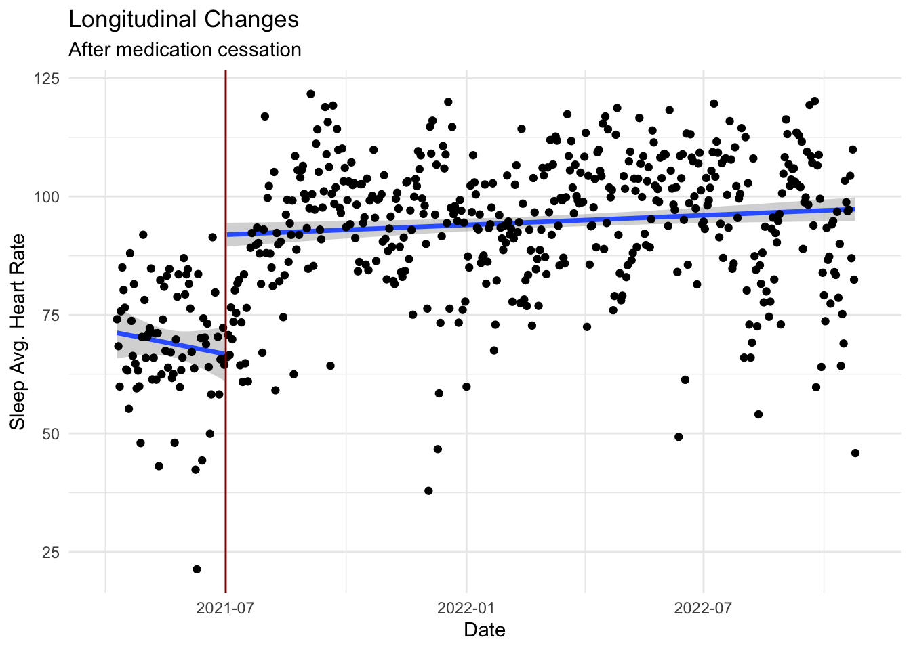
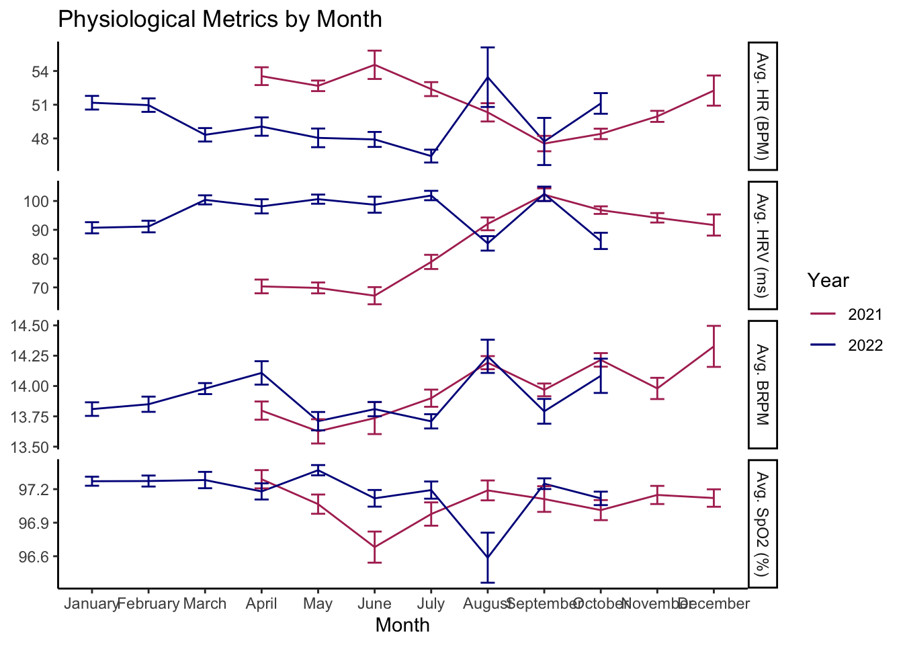
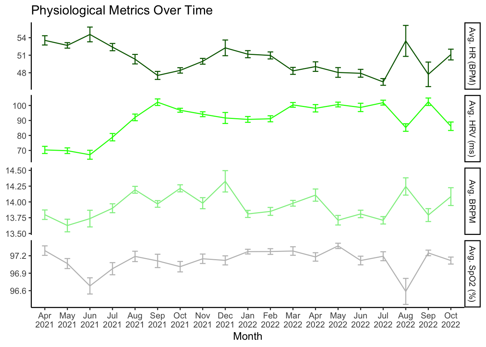
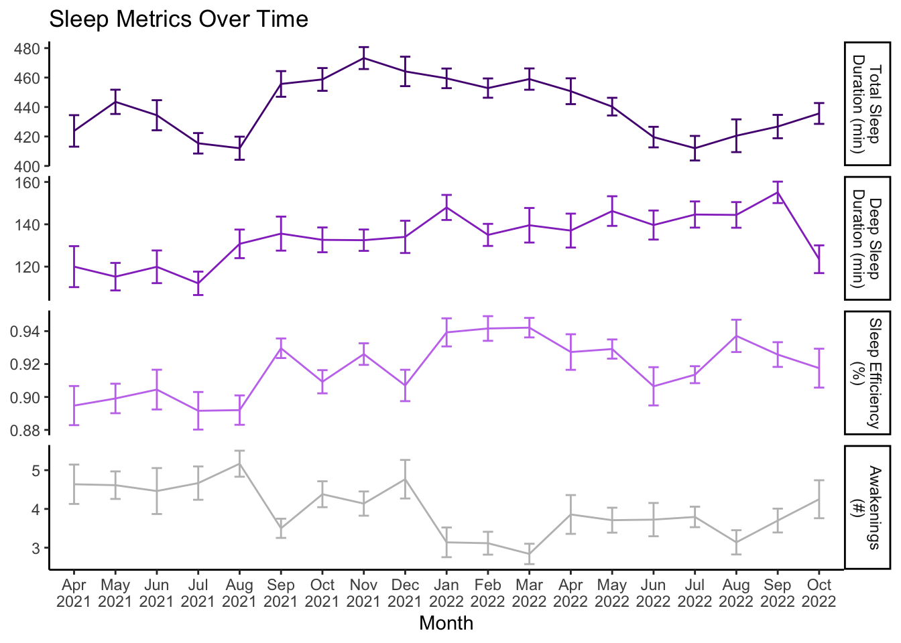

Long-term Trends
Trends
In my last post, I demonstrated some changes in exercise and physiological metrics over the course of a week, largely dictated by my weekly habits. However, there are some other changes (both voluntary and involuntary) that occur over the course of the year. This brief walk-through shows some of the data longitudinally over the course of my data collection.
Health data
To start, I think it’s neat to demonstrate my HRV over time, while noting the time that I stopped taking an SNRI July 2021 (a medication that alters CNS activity). Once I stopped taking this medication, my HRV increased fairly dramatically.
As an aside, I didn’t have my data prior to starting this medication, but the data suggest that the medication was blunting my HRV - an interesting occurrence since this medication is used to lower stress. This is relatively inverse of what people associate from HRV, where stress usually lowers HRV.
Unfortunately, even with 1.5 years of data, this means that I can only really compare July-October across years, but the trends each calendar year are shown below:

Of note, I think it’s interesting that Respiratory Rate seems to have a similar trend across these months despite no clear pattern in HRV or HR. Additionally, you can see pretty subtle changes over time, but August 2022 stands out to me, which was when I took a 2.5 week international vacation, so it seems that big trips across time zones can impose a good amount of stress, even though it wasn’t necessarily perceived as “stress”.
To look even broader, having it all laid out kind of illustrates the effect that the SNRI had being larger than any seasonality, although there does appear to be a good bit of fluctuation - I just don’t have enough data to know if that is repeatable over a long time. It does stand to reason that there would be a difference between summer and winter, for example, as the weather and its related effects (heat stress, Vitamin D, daylight exposure, etc.) should theoretically affect some of these health variables.

Sleep Data
Quickly covering sleep, I had little to no expectations because I keep a close eye on my exercise and nocturnal physiology - just not looking closely at my sleep. I don’t really have a reason why I don’t look at it, but the following graph makes me curious to keep an eye on it in the future.
Particularly, I didn’t notice I had quite such a large swing in sleep duration between winter and summer. I could have guessed that waking up pretty early to work out before it gets hot costed me a little bit, but it appears almost an hour. Additionally, over time, it looks like I have been getting better quality sleep ( better efficiency, less awakenings, & deep sleep duration - even when total sleep decreases seasonally). I don’t know exactly why, but I do feel that my sleep has improved after finishing grad school in early 2021.

Exercise Data
Since we have the exercise data, I think it’s worth bringing this up as well. I know that my habits change a good bit based on the seasons, mostly due to extended daylight hours, warmer weather, and overall motivation. Looking at duration first, it appears that I have the lowest daily exercise duration in the winter months, and the warmer months tend to be higher. I should also note that June is reduced due to a bike crash in June 2022, meaning I had to stop exercising as much for the majority of that month.


Looking at my exercise average heart rate doesn’t seem to yield much information, unsurprisingly. Exercise heart rate data is hard to gain insights on without context. For example, if my heart rate goes up in the summer, is it because: I’m less fit for the same workload? I’m equally fit but training harder? I’m equally fit & training the same but I’m training in hotter environments?… The point being that I wouldn’t explicitly expect seasonal trends unless many things were held constant.

HOWEVER, I can get at some of that. To fully look into that is beyond the scope of this post, but if we just plot a simple graph using pace per heart rate (this was m/s per beat/s, yielding meters per beat), we can get a very rough index of efficiency. PLEASE NOTE: I do not support this for exercise modeling. It is not a very linear relationship or mathematically sound; this is just to get a point across. Additionally, this is running only, as biking has too many other variables at play with speed.
When doing this, it appears that I’m most “efficient” during March and October, which makes sense to me. March tends to be when I am on a fitness trend upwards from being less in-shape over the winter, the temperature is usually very pleasant, and the humidity hasn’t come in yet; October is when it starts cooling down, the humidity goes away, and I’m usually coming off of racing season.

For those curious, speed is presented below. The running portion may be more insightful, as I tend to keep my routes and running partner rather consistent. Biking is a much different story, where you can see I vary much more widely, particularly in October where I do a short stint in Cyclocross training/racing, slowing my speed down; it’s important to remember thought that I do a number of disciplines from mountain, gravel, road, TT, etc., so average speed isn’t particularly insightful in this context.

Summary
This, along with the last post, is really just meant to illustrate the non-stationarity in health and exercise data. In many regards, the seasonality is smaller than expected (i.e. in health and sleep data), but exercise (a habit of sorts) seems obvious we would see some changes based on weather, daylight, etc.
Another interesting note was before and after the SNRI. I knew that there was a change at the time in my HRV, but I didn’t realize how much it had potentially affected my sleep. It was not supposed to be a point of this article, but the signal seemed too big to not address. Unfortunately this may have been what caused my inability to look across seasons effectively, but it happens and represents “real-world data”.
This and the last post about trends are really just an introduction into the data to help visualize what data exists, but I’ll start exploring relationships and modeling as we go.